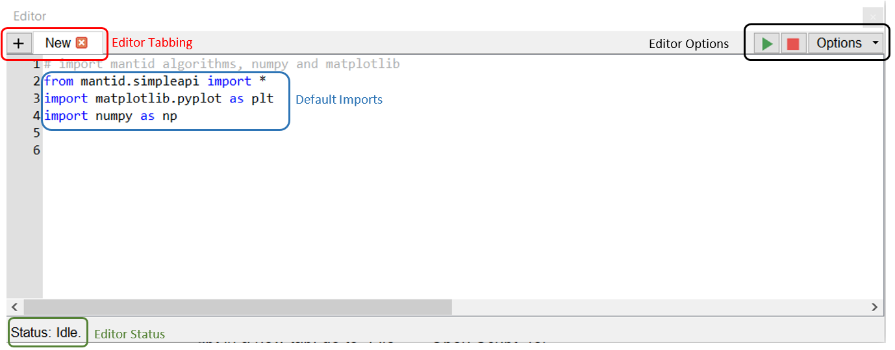
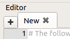
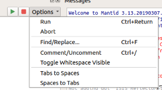
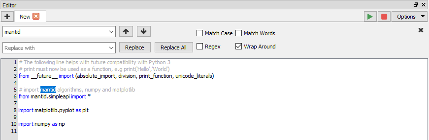
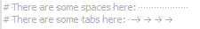
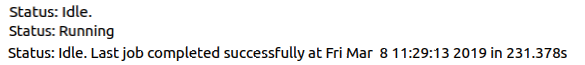

Workbench Script Window#
The script window is another key part of the Workbench. The script window is used to write or load python scripts that integrate with the Mantid framework and operate on data loaded within the Workbench. The window contains a status bar, multiple tabs for scripts, run and abort buttons and an options menu.
{kind=link}

Editor Tabbing#

Click the + button to open a new tab (or use the Ctrl+N keyboard shortcut), or if you wish to open an existing
script in a new tab, go to “File” -> “Open Script” (or use the Ctrl+O
keyboard shortcut). When opening the Workbench any script window tabs that were
open last time it was closed will be restored.
Editor Options#

Run and Abort#
There are buttons to run and abort the current script, or alternatively you can
use the shortcut Ctrl+Return to run the script. If a section of a
script is selected then only the selection will be run, if nothing is selected
the whole script will be run. A shortcut to run the full script, regardless of
selection, is Ctrl+Shift+Return.
Workbench does allow you to run more than one script at once. When doing this, be aware that when the Messages Window is set to display output from only the current tab, the output from all running scripts will be attributed to the script executed last.
Find and Replace#

There is a useful find and replace window that can make navigating your scripts much easier. You can search for exact words, make your search case sensitive or even use regular expressions (Regex).
Toggle Whitespace Visible#

Whitespace is an important part of the Python language and seeing how many spaces you have in your indentations can be useful. When whitespace is set to visible a space will be represented by a small dot and tabs by an arrow. This option will apply to all tabs.
Toggle Tabs and Spaces#
Python is very particular about mixing tabs and spaces within your scripts. To avoid any problems with the Python interpreter an option is provided to convert all tabs to spaces or all groups of 4 consecutive spaces to tabs. If some text within a script is selected, these options will only apply within the selected region.
Change Font Size#
The keyboard shortcuts Ctrl++ and Ctrl+- can be used to increase
and decrease the size of the font in the script window respectively. This
can also be done by holding down Ctrl and using the mouse wheel. The change
in font size will occur across all tabs, including any new tabs opened, and will be
retained when Workbench is closed and re-opened.
Default Imports#
By default any new scripts within the window include some imports that are useful in the Workbench.
The first import is:
from mantid.simpleapi import *
This provides access to Mantid’s set of algorithms from within the your scripts.
The second is:
import matplotlib.pyplot as plt
import numpy as np
Workbench’s plotting is all done through Matplotlib which provides a wide range of plotting tools and a large user community and therefore excellent documentation and support. For an overview of using Matplotlib with Mantid see Introduction to Matplotlib in Mantid.
NumPy is ubiquitous within scientific computing in Python and its data structures can be used within Mantid. For a short introduction to NumPy see Mantid’s Numpy Introduction.
Editor Status#

The editor window’s status bar gives the current state of the Python interpreter. It will tell you if there is a script currently running, or if the interpreter is idle. It will also inform you of when the last script was executed and whether it was executed successfully or if there were errors.
Comment and Uncomment#
Commenting and uncommenting code is a useful tool for any script writer. To use this, select some lines you wish to comment and click the “Comment/Uncomment” option (or use the
Ctrl+/shortcut). To uncomment, select some commented lines and clickCtrl+/.